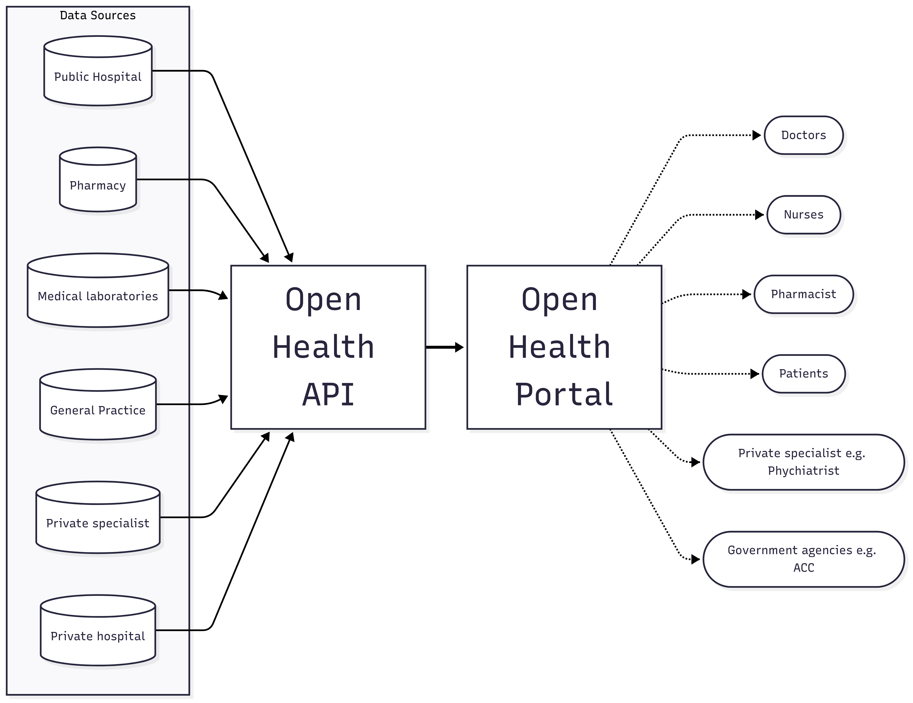

Unified data ecosystem connecting all healthcare providers through a single API
- 🏥 Public & Private Hospitals
- 🏪 Pharmacies & GP Clinics
- 🔬 Medical Laboratories
- 🩺 Private Specialists
- 👥 Multi-User Access Portal

Connecting New Zealand's fragmented health data landscape
GovHack 2025
of patient visits have missing clinical information
of searches take 5-10 minutes unsuccessfully
of missing information cases likely to adversely affect patients
Unified data ecosystem connecting all healthcare providers through a single API
Our core innovation is a standardized, secure API that enables seamless health data exchange across New Zealand's healthcare ecosystem.
Built with privacy-first design using NHI and RealMe authentication
RESTful API with OpenAPI 3.0 specification
Instant patient data retrieval across all providers
Intuitive patient portal providing secure access to comprehensive health information with AI-powered insights.
Integrates data from hospitals, GP clinics, pharmacies, laboratories, and specialists
Highlights critical results, drug interactions, treatment patterns
Complete medical history, medications, and test results in one view
Emergency Physician, Christchurch
Instant access to North Island patient records during critical emergencies
Psychologist
Holistic view of patient medication history for comprehensive mental health treatment
Rural Patient, Otago
Access to blood test results and medical records from home, regardless of provider
Epidemiologist, Health NZ
Centralized data for disease surveillance and public health forecasting